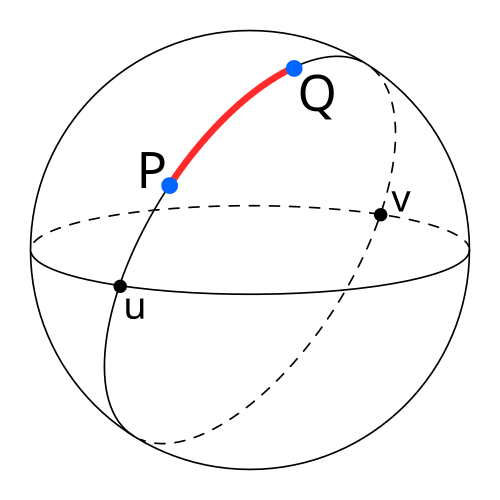
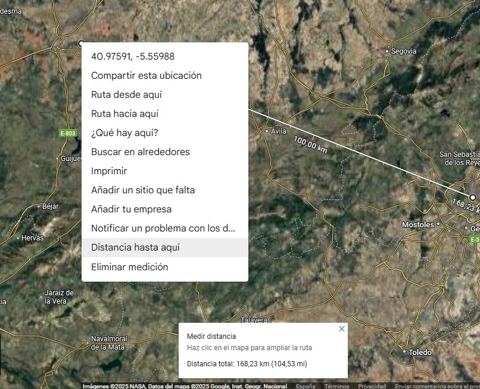

Tema 1 — Introducción a Python (Hoja de ejercicios)#
Objetivos de aprendizaje
Familiarizarte con el entorno de trabajo (VSCode + extensiones de Python).
Practicar variables y operadores, casting de tipos y E/S por consola (
input,print).Usar
importpara bibliotecas estándar (math) y de terceros (haversine).Implementar y validar la fórmula de Haversine.
Reproducir en Python un cálculo clásico de Número de Reynolds.
Requisitos previos
Python 3.10+ instalado.
VSCode con extensión de Python.
Conocimientos mínimos de consola/terminal.
1. Par o impar#
Enunciado. Escribe un programa que determine si un número entero es par o impar.
Usa input() para leer, int() para casting y el operador módulo %. De momento no es necesario validar la entrada.
Recordatorio
Recuerda que
n % 2 == 0indica quenes par.La función
input()devuelve una cadena, usa operaciones de casting comoint()para convertir a entero.Practica el uso de
if/elsepara la lógica condicional.Usa
print()para mostrar el resultado.Revisa el uso de las f-strings para formatear la salida.
2. Ficha personal con formato#
Enunciado. Pide nombre, apellidos, edad, peso (kg), altura (m) y DNI (número y letra).
Muestra exactamente el formato:
Se llama XXX XXXX XXXX, tiene XX años, pesa XX.X kg, mide XX.XX m y su número de DNI es XXXXX y letra X.
Recordatorio
Usa
input()para cada dato y convierte a tipos adecuados (int,float).F-strings con formato:
peso:.1f,altura:.2f. Chuleta de f-strings: https://fstring.help/cheat/
3. Distancia entre coordenadas (Fórmula de Haversine)#
La fórmula de Haversine permite calcular la distancia entre dos puntos en la superficie de una esfera a partir de sus latitudes y longitudes.
{kind=link}

Fig. 6 Un diagrama que ilustra la distancia entre dos puntos en la superficie de una esfera según la fórmula de Haversine. Fuente: CheCheDaWaff, vía Wikimedia Commons. Licencia: CC BY-SA 4.0.#
{kind=link}
Enunciado. Pide latitudes y longitudes (en grados decimales) de dos puntos y calcula la distancia usando
la fórmula de Haversine con funciones del módulo math (radians, cos, sin, asin, sqrt).
Sea \(r = 6372.7954\ \text{km}\) el radio medio terrestre.
Para \((\varphi_1,\lambda_1)\) y \((\varphi_2,\lambda_2)\) en radianes:
Recordatorio
Convierte grados a radianes con
math.radians.Valida rangos: lat ∈ [-90, 90], lon ∈ [-180, 180].
Prueba con coordenadas conocidas, por ejemplo:
Salamanca (40.97915031936888, -5.609452413216567) a Madrid (40.44727142930985, -3.522017541475585) ≈ 168 km (este valor dependerá de la fórmula implementada y del radio terrestre usado).
Puedes obtener las coordenadas de ciudades con Google Maps pulsando con el botón derecho en el mapa y obteniendo la las coordenadas del punto. También puedes usar la opción de medir distancia para comprobar resultados.

4. Distancia con la biblioteca haversine#
Enunciado. Repite el cálculo anterior, pero ahora usando la biblioteca de terceros haversine. En este caso será necesario instalar la biblioteca. Desde la terminal de VSCode (o cualquier consola), tienes que seguir los siguientes pasos:
Asegúrate de tener el entorno virtual activado (si lo estás usando). Por ejemplo, en Windows CMD:
Si el entorno virtual está en la carpeta .conda dentro de la carpeta raíz del proyecto:
conda activate ./.conda
Instala la biblioteca
haversineusandopip, el gestor de paquetes de Python:
pip install haversine
Explora los ejemplos disponibles en la documentación oficial para usar la función adecuada.
Ejemplo básico de uso:
from haversine import haversine, Unit
point1 = (lat1, lon1)
point2 = (lat2, lon2)
distance = haversine(point1, point2, unit=Unit.KILOMETERS)
print(f"La distancia es {distance:.2f} km")
Recordatorio
Asegúrate de que las coordenadas estén en el formato correcto (grados decimales).
Compara los resultados con la implementación anterior para verificar la precisión.
Revisa el código fuente de la biblioteca en GitHub para entender cómo se implementa la fórmula internamente.
5. (Adicional) Número de Reynolds#
El número de Reynolds es un parámetro adimensional que caracteriza el régimen de flujo de un fluido. A continuación se muestra un video con un experimento visualizando diferentes regímenes de flujo según el valor del número de Reynolds:
Enunciado. Implementa en Python el cálculo del Número de Reynolds. El programa debe pedir los datos necesarios por consola y mostrar el resultado formateado. Recuerda la definición del número de Reynolds:
Recordatorio
Pide por consola densidad \(\rho\), velocidad \(v\), diámetro \(D\) (o longitud característica) y viscosidad \(\mu\).
Devuelve Re y clasifica el régimen (turbulento/transicional/laminar según umbrales habituales).
Referencias y enlaces útiles#
Documentación de Python: https://docs.python.org/3/
Conversión angular en
math: https://docs.python.org/3/library/math.html#angular-conversionFórmula de Haversine (Wikipedia): https://en.wikipedia.org/wiki/Haversine_formula
haversineen PyPI: https://pypi.org/project/haversine/F-strings cheat sheet: https://fstring.help/cheat/